The slide of the lecture is on the left, the same figure or table on the right, computed in the browser from the same data. The ▶ button moves the parameter step by step; the tables and worked examples are recomputed with it. Abbreviations: VaR (value at risk), CoVaR (the VaR of the system conditional on an institution), ΔCoVaR (the institution’s contribution to CoVaR), ES (expected shortfall), MES (marginal expected shortfall), LRMES (long-run MES), SRISK (the capital shortfall in a crisis), OLS (ordinary least squares), DGC (degree of Granger causality), VAR (vector autoregression), FROM, TO, NET (the shares received from the other banks, passed to them, and their difference), CET1 (common equity tier 1), G-SIB (global systemically important bank), BCBS (Basel Committee on Banking Supervision), BET (the index of the Bucharest Stock Exchange), VIX (the implied volatility index of the S&P 500), JPM, BAC, C, GS, MS, WFC (JPMorgan Chase, Bank of America, Citigroup, Goldman Sachs, Morgan Stanley, Wells Fargo), DBK, BNP, SAN, INGA, HSBA (Deutsche Bank, BNP Paribas, Santander, ING, HSBC), TLV (Banca Transilvania), BRD (BRD – Groupe Société Générale).
Four Crises in the Data · Correlation and Tail Dependence in Crises · CoVaR and Delta-CoVaR · MES and SRISK · Networks of Banks · Macroprudential Policy
Four Crises in the Data
Bank Portfolios since 2005
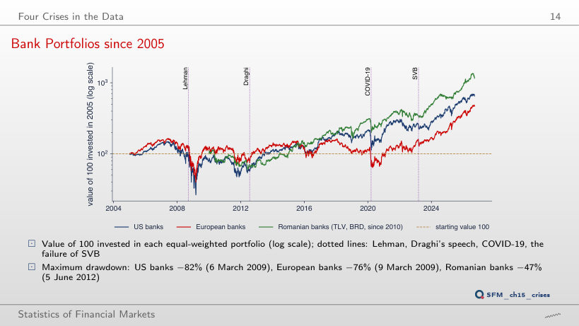
Answer
−51%, on 23 November 2011, against −82% with the 2005 investment: the March 2009 trough is no longer in the sample. The maximum drawdown depends on the start of the sample; for the European banks the deepest point after 2010 is 21 April 2020 (−61%).
Four Episodes Side by Side
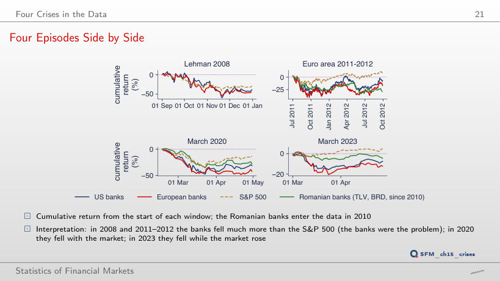
Answer
−10.8% instead of −47.6%: the window starts on 15 March 2020, after most of the fall, and the portfolio ends at +16.9%. The cumulative return is measured from the start of the window, so the comparison of episodes depends on that date.
Correlation and Tail Dependence in Crises
Correlation between Banks Rises in Crises
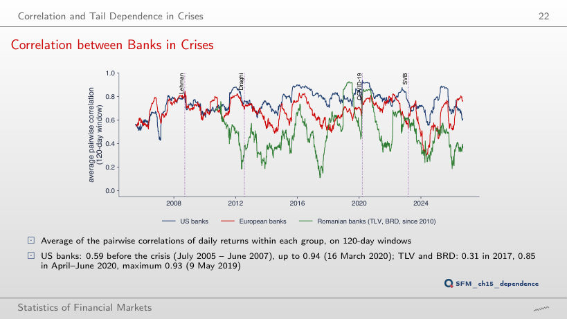
Answer
To 0.96, on 6 February 2019, still outside any crisis (with 120 days: 0.93 on 9 May 2019). For a single pair of stocks a short window gives larger extremes; the maximum of the US banks stays on 16 March 2020 (0.95).
Interpretation: When Diversification Fails
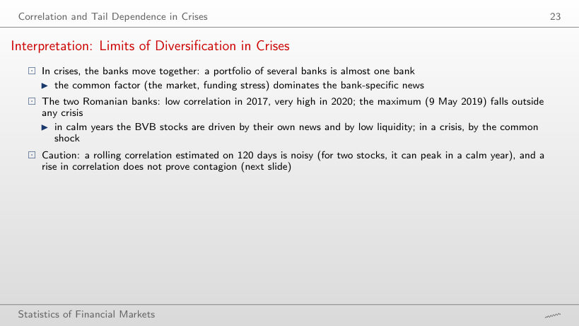
Mean of the average pairwise correlation by period (the numbers of the previous slide)
Answer
In 2019: 0.80, above 2020 (0.76) and 2011 (0.56). The 120-day correlation of two stocks is noisy and can peak in a calm year, as the daily maximum of 9 May 2019 also shows.
Contagion or Interdependence? Forbes and Rigobon (2/2)
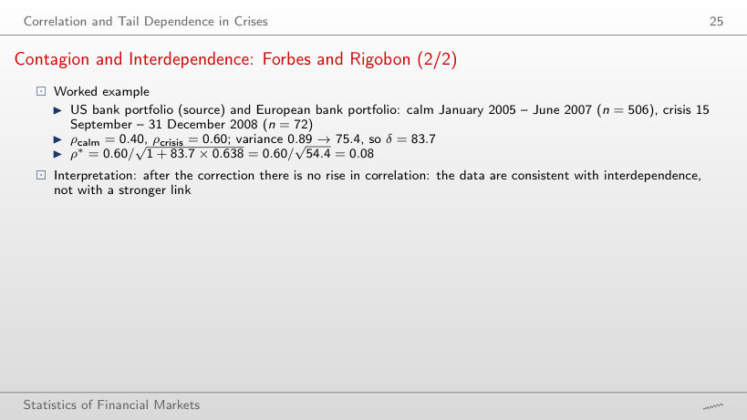
Worked example: the Forbes–Rigobon correction
Answer
No: ρ_crisis = 0.74, but the variance of the US portfolio rises 47-fold (δ = 46.0), so ρ* = 0.74/√(1 + 46.0 × 0.451) = 0.16. Of the four windows only March 2023 gives ρ* = 0.42, just above 0.40, because volatility rose little (δ = 3.7).
Tail Dependence of Banks and Markets
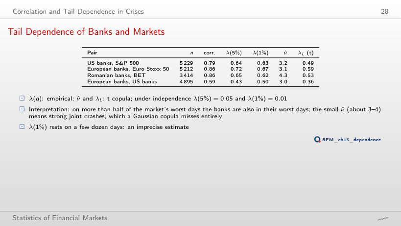
Tail dependence (the table of the slide and λ(q) at the chosen level)
Answer
It rises to 0.73, from 0.64 at 5%; under independence it would be 0.005. The estimate rests on the 26 worst days of the S&P 500, so it is imprecise: for the European banks λ(0.5%) falls to 0.58.
Joint Bad Days
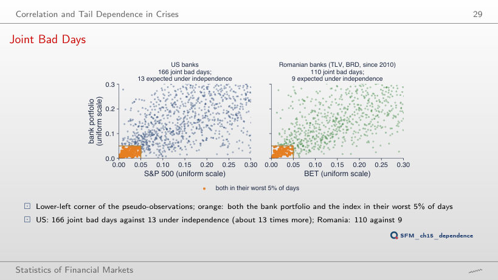
Answer
About 63 times: 33 days against q²n = 0.0001 × 5,229 = 0.52, against 12.7 times at q = 5%. The ratio grows towards the tail: very bad days come together.
CoVaR and Delta-CoVaR
Worked Example: JPMorgan Chase and the S&P 500
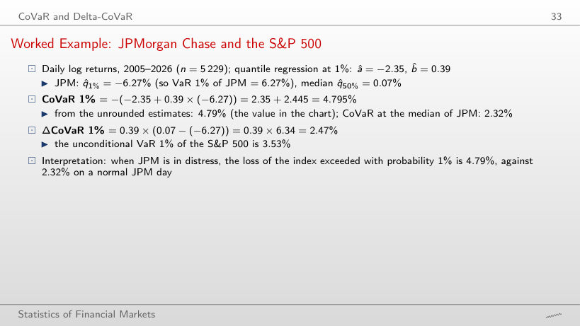
Worked example: CoVaR from the quantile regression
Answer
Smaller: 2.45%. The JPM quantile (−3.07%) and the intercept (−1.26) are less extreme, and the slope stays 0.39; ΔCoVaR 5% = 1.22%, about half of 2.47%.
CoVaR in a Picture
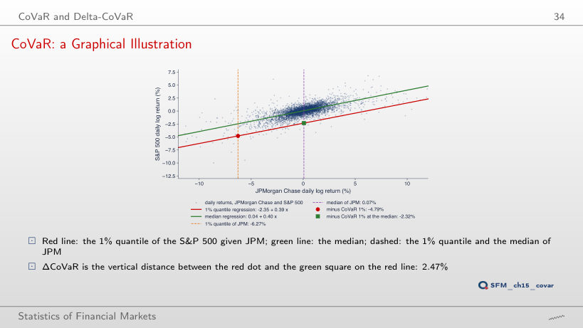
Answer
Hardly at all: 0.385, 0.390 and 0.401, against 0.390 at 1% and 0.398 at the median. The intercept moves, from −2.35 to −0.86: the lines are almost parallel, so ΔCoVaR falls because the distance between the JPM quantiles falls.
ΔCoVaR 1% of 13 Banks
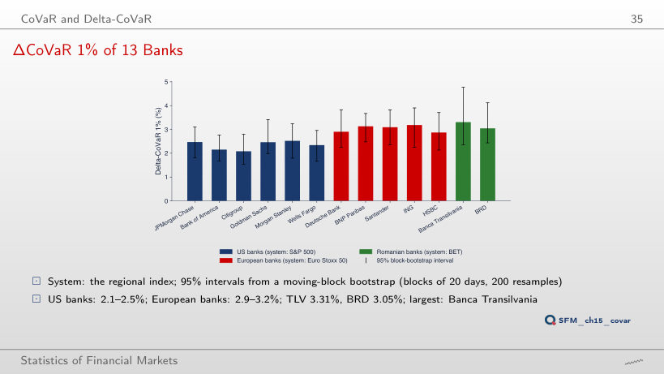
Answer
Still the European banks: 1.43–1.68% (Santander 1.68%), against 1.12–1.33% for the US banks; TLV 1.51%, BRD 1.45%. At 1% the largest value was TLV’s (3.31%).
Interpretation of ΔCoVaR
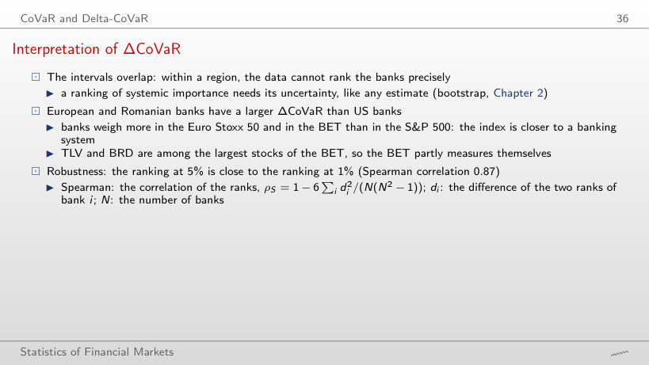
CoVaR and ΔCoVaR 1% of the 13 banks (the numbers of the previous chart) and ΔCoVaR at α₂
Answer
0.84, against 0.87 at 5% and at 2.5%: the ranking stays close; the level of ΔCoVaR changes (0.74–1.20% at 10%), not the ranking.
Worked Example: Banca Transilvania and the BET
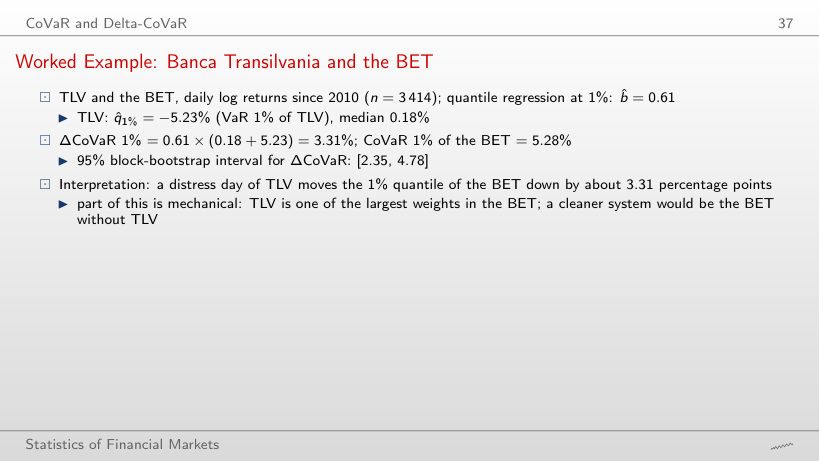
Worked example: ΔCoVaR between the median and the stress state
Answer
1.51%, less than half of 3.31%: the slope falls from 0.611 to 0.542 and the distance between TLV’s median and its quantile falls from 5.41 to 2.79 percentage points; 0.542 × 2.79 = 1.51.
VaR Is Not ΔCoVaR
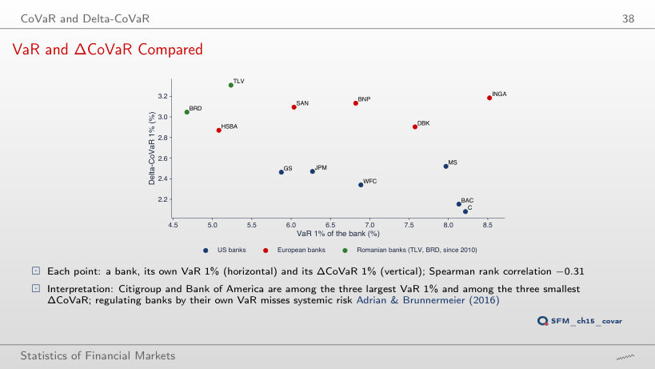
Answer
No: it becomes +0.20 (at 2.5%: −0.13; at 5%: +0.03). With 13 banks none of these correlations, not even −0.31 at 1% (p = 0.31), is significant at 5%; what remains is that a bank’s own VaR does not rank the banks by ΔCoVaR.
ΔCoVaR 1% through Time
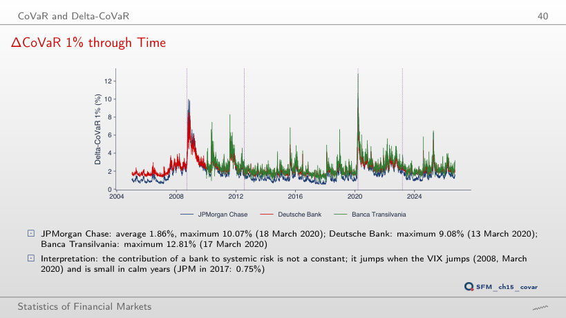
Answer
On 28 October 2008 (7.58%), not in March 2020 as at 1% and 5%; in March 2020 it reaches 7.52%. The two peaks are almost equal, so the date of the maximum depends on α.
MES and SRISK
Worked Example: MES from Ten Days
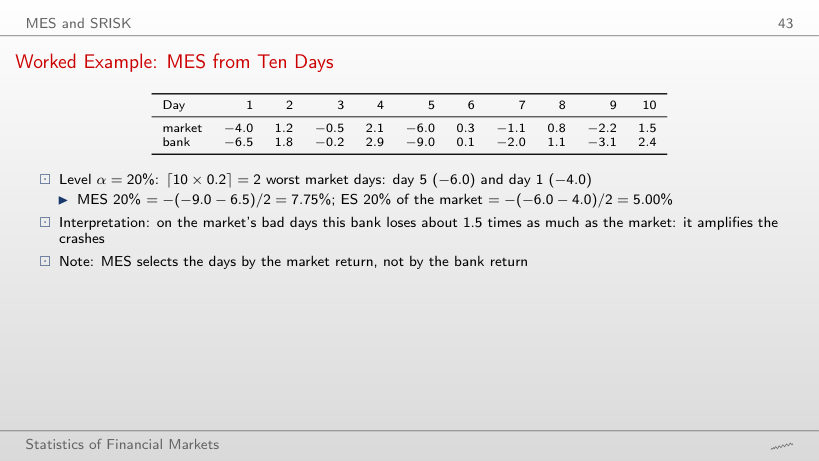
Worked example: MES as the average return of the bank on the market’s tail days
Answer
6.20% = −(−9.0 − 6.5 − 3.1)/3: day 9 is added (market −2.2%, bank −3.1%). The ES 30% of the market = 4.07%, and MES falls from 7.75% because the third day is less extreme.
MES 5% of 13 Banks
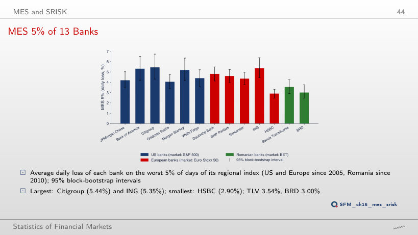
Answer
Citigroup, 10.64%, almost tied with Bank of America (10.62%); HSBC stays the smallest (4.86%). At 1% MES rests on 53 days of the S&P 500.
Interpretation: MES and ΔCoVaR
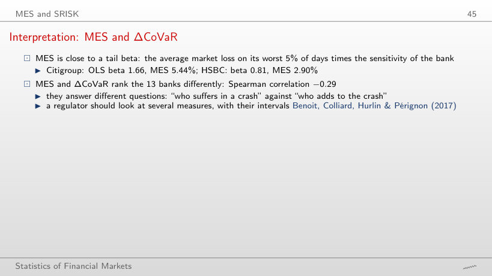
MES, OLS beta, ES of the market, LRMES and the break-even leverage (the numbers of the slides)
Answer
It becomes more negative: −0.58, against −0.29 at 5%. The two measures answer different questions, and at the same 1% level their rankings differ even more.
Case Study: Did MES Predict the 2008 Losses?
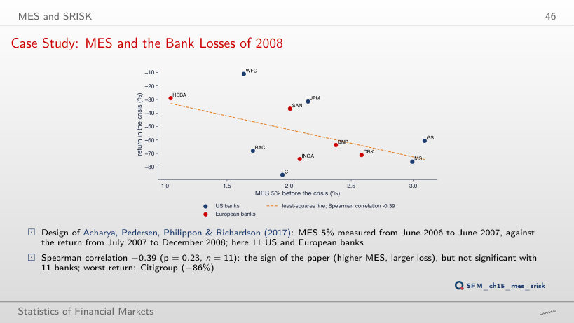
Answer
No: −0.37 (p = 0.26); at 10%: −0.41 (p = 0.21). The sign is the paper’s, but with 11 banks it is not separated from noise.
From MES to LRMES
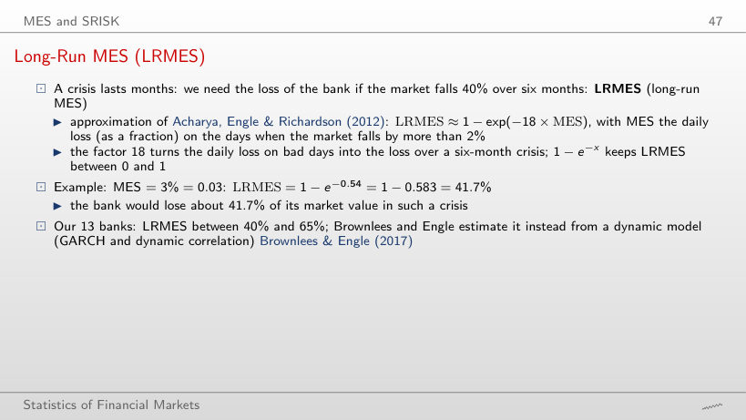
Worked example: from MES to LRMES
Answer
66.0% = 1 − e^(−1.08), not 83.4% = 2 × 41.7%: the function 1 − e^(−x) rises more and more slowly and stays below 100%.
SRISK: the Capital Shortfall in a Crisis
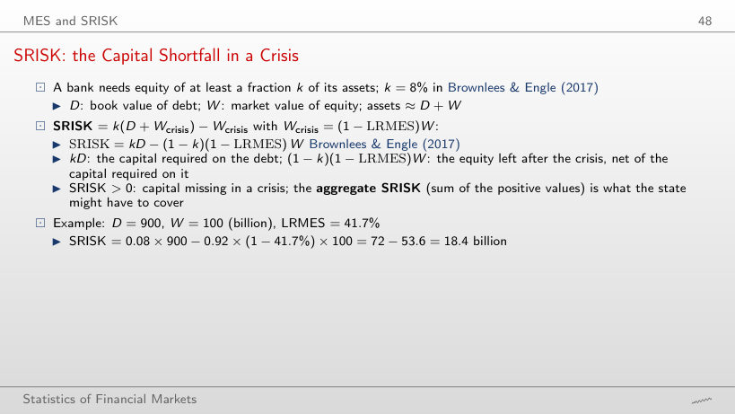
Worked example: SRISK
Answer
45.2 billion = 72 − 0.92 × 0.583 × 50 = 72 − 26.8. The leverage L = 950/50 = 19 is far above L* = 7.7: a fall in the market value of equity increases the shortfall.
SRISK and Leverage
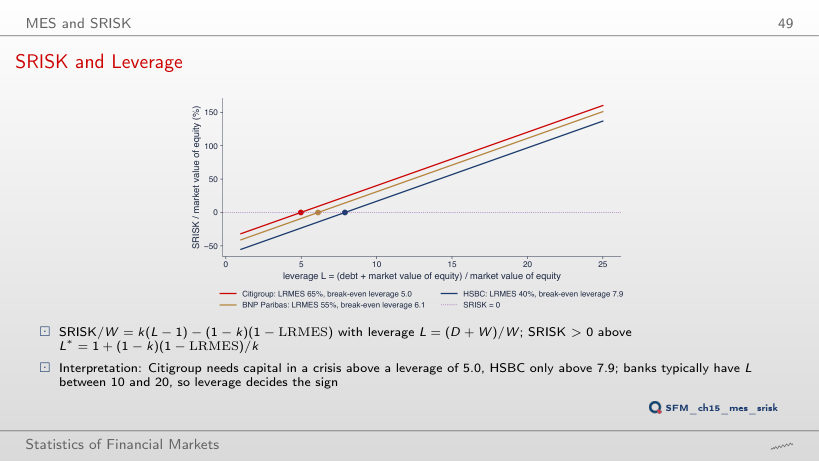
Answer
6.9, against 5.0 with k = 8%: a smaller k requires less capital, so the threshold L* = 1 + 0.945 × 0.345/0.055 rises. For HSBC the threshold rises to 11.3.
Networks of Banks
Granger Networks through Time
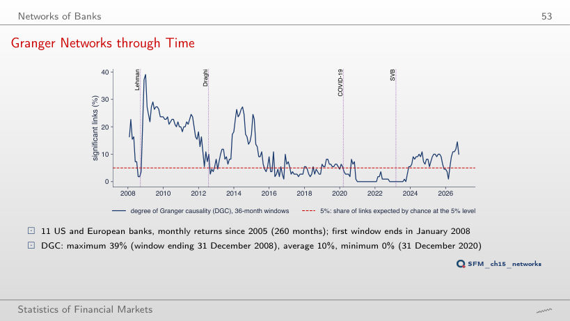
Answer
35.5% (the window that ends in January 2010), against 39.1% with 36 months; the mean rises from 9.6% to 12.0%, because 2007–2009 stays in more windows.
Two Networks: 2007–2009 and 2017–2019
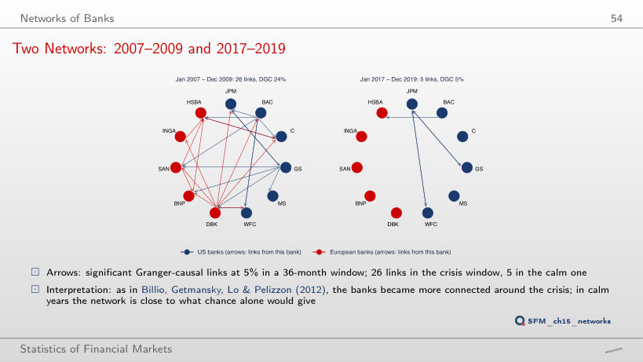
Answer
43 (DGC 39%), against 26 in 2007–2009; the calm window has 7. The window that ends in December 2008 is the maximum of the previous chart.
Diebold–Yilmaz Connectedness
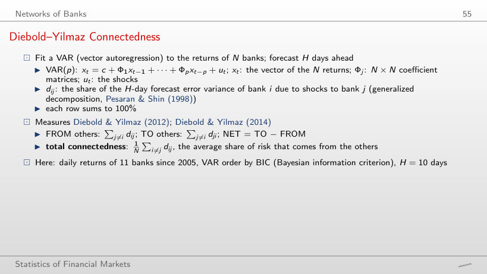
Worked example: a share of the variance decomposition and the total connectedness
Answer
80.6%, practically as at H = 10 (80.65%); the total connectedness is 78.0% against 78.3%. Daily returns are almost unpredictable, so the decomposition comes almost entirely from the correlation of same-day shocks, not from the VAR dynamics.
The Connectedness Table
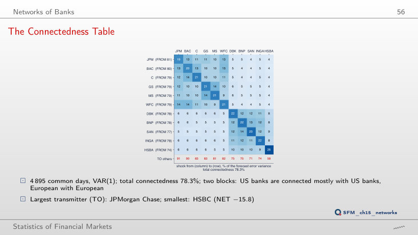
Answer
It stays 78.3%: from H = 5 on, the value no longer changes at the first decimal. The VAR(1) coefficients of daily returns are small, so the effects of a shock die out within a few days.
Interpretation of the Connectedness Table
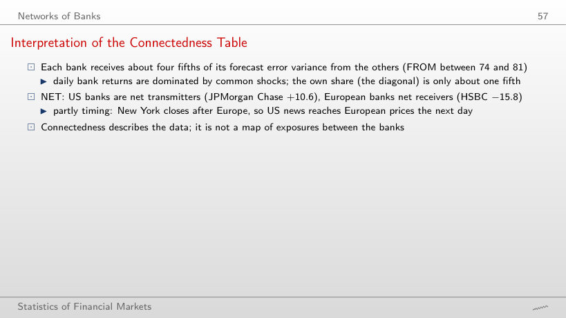
Own share, FROM, TO and NET (in %, horizon of 10 days)
Answer
HSBC, −20.1, as over the whole period; the US banks stay net transmitters (JPMorgan Chase +8.8, Bank of America +11.3), and the total connectedness is 80.2%.
Total Connectedness through Time
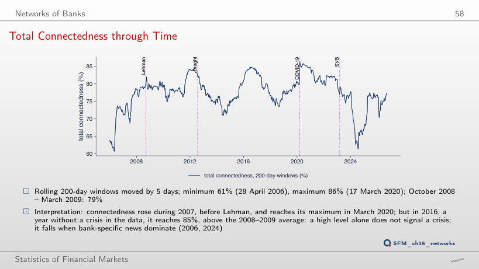
Answer
Yes: 87.9% on 17 March 2020. The 2016 maximum rises to 86.0% and the minimum falls to 54.5% (20 May 2024): short windows give larger extremes in both directions.
Macroprudential Policy
Basel III Capital Buffers
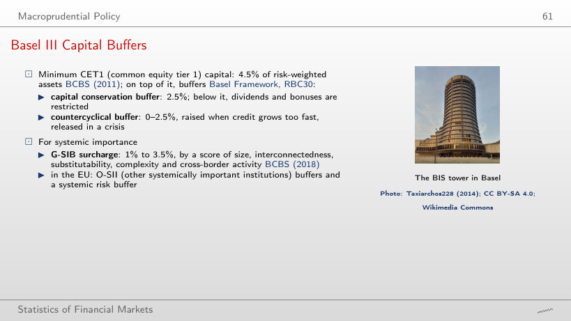
Worked example: the CET1 requirement of a bank
Answer
10.5% = 4.5 + 2.5 + 2.5 + 1 of risk-weighted assets (BCBS (2011); BCBS (2018)). With the maximum surcharge of 3.5% it would be 13%.
Course data in data/market (EODHD, January 2005 – 18 September 2026): daily adjusted closes of the 13 banks and the closes of the S&P 500, Euro Stoxx 50 and BET; the Romanian banks since 2010. The quantile-regression coefficients, the block-bootstrap intervals of ΔCoVaR 1% and MES 5%, the t-copula parameters, the time-varying ΔCoVaR and the rolling total connectedness come from the code of the chapter (Quantlets/Ch_15). From the prices the browser recomputes the returns, the bank portfolios, the episodes, the correlations, the Forbes–Rigobon test, the empirical tail dependence, the quantiles, CoVaR and ΔCoVaR, MES, LRMES, SRISK, the Granger networks and the Diebold–Yilmaz table. Other levels α, windows, thresholds, periods and horizons are extra runs of the same code. The examples of MES from ten days, LRMES, SRISK and the Basel III buffers use the numbers of the slides; the capital requirements follow BCBS (2011) and BCBS (2018).